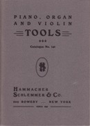
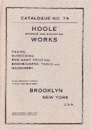

The Old Tool Reprint Room
Reprints: E-M
Some of the reprints listed here were re-created from damaged originals. Their covers and title pages may bear no relationship to the actual artifact. Others, especially those reprinted by Ken Roberts, have had additional pages of background information added to them. Conversely, some titles were not reproduced in their entirety in order to keep production costs down. The size of many reprints has no correlation to that of the original document.
Eagle Square Manufacturing Company
- Cover title: Steel Carpenters' Squares
- Title page: Complete Line of Steel Squares Made by the Eagle Square Manufacturing Co.: What The Scales and Tables Are and How to Use Them
- South Shaftsbury, Vermont : Eagle Square Manufacturing Company, no date.
- Reprinted: Mid-West Tool Collectors Association, 1991.
- Reprint is paperbound, 30 pages, 10 x 19.5 cm.
- An introductory guide to the Eagle line of steel squares with instructions on how to use the various scales stamped on them.
Edmond — V. A. Edmond & Company

- Quebec Steam Plane Factory, V. A. Edmond & Co., 1889
- Original title: Illustrated Catalogue and Price List of Bench, Moulding & Coopers Planes, etc., etc.: Manufactured by V. A. Edmond & Co.
- Quebec : V. A. Edmond & Company, 1889.
- Reprinted: Kingston, Ontario : MacLachlan Woodworking Museum, 1995.
- Reprint is paperbound, 24 pages, 14 x 22 cm.
- Catalog features wooden planes.
Elwell, Edward
- Title page: The Mid-Victorian Elwell Catalog of Forged Tools: a Facsimile
- Internal title page: Edward Elwell, Wednesbury Forge, Wednesbury, Staffordshire: Illustrated Catalogue
- Wednesbury, Staffordshire, England : Edward Elwell, ca. 1865.
- Reprinted: Needham Market, Suffolk, England : Roy Arnold, 2000. (ISBN 0-90463813-8)
- Reprint is paperbound, 512 pages, 21 X 30 cm.
- Reprint includes historical introduction by Richard Filmer.
- Catalog includes billhooks, axes, hatchets, adzes, hoes, shovels, hammers, paring chisels, etc.
- Fales Patent Planes
- See Smith, Otis A.
Farrington, I. B.
- Price List of I. B. Farrington's Ornamental Designs for Scroll Sawing and All Kinds of Scroll Saw Machines
- Brooklyn, New York : I. B. Farrington, 1879.
- Reprinted for Mid-West Tool Collectors Association by Early Trades and Crafts Society, 1977.
- Reprint is paperbound, 16 pages, 14 x 21.5 cm.
- Catalog includes, scroll saws, bracket saws, the Companion drill, pin vises, etc. Oddly, also includes a .22 caliber revolver.
Féron et Cie
- Á La Forge Royale Fabrique d'Outils Montés a Travailler Le Bois, Féron & Cie, Sucesseurs del Lemainque
- Translation: At the Royal Forge, Manufacturer of Finished Tools for Working in Wood, Féron & Cie, Successors to Lemainque
- Paris : Feron & Cie, 1927
- Reprinted: Mid-West Tool Collectors Association and Early American Industries Association, 1981.
- Reprint is paperbound, 102 irregularly numbered pages, 18.5 x 27 cm.
- English language translations on facing pages.
- Reprint includes three-page introduction by Seth Burchard, a bibliography, cross-section drawings of casement windows and a short appendix that explains caner's tools.
- Catalog includes wooden planes, clamps, work benches, frames saws, casement window planes, clamps, caner's benches and tools etc.
Fitz Water Wheel Company
- Cover title: Fitz Steel Overshoot Water Wheel: Fitz Water Wheel Co. Hanover, Penna. U.S.A.
- Title page: Fitz Steel Overshoot Water Wheels: Manufactured by Fitz Water Wheel Co. Hanover, Pa. U.S.A.
- Hanover Pennsylvania : Fitz Water Wheel Company, 1928.
- Reprinted: Society for the Preservation of Old Mills, 1987.
- Reprint is paperbound, 84 pages, 13 x 20 cm.
- Not a catalog in traditional sense as most installations required a different wheel.
- Prior to the development of rural electrical grids, overshot wheels, which require a relatively small flow, remained a viable source of power in a number of rural areas.
- Information courtesy Chuck Guilford.
Folding Sawing Machine Company
- Folding Sawing Machine: Fall and Winter, 1896-97
- Chicago, Illinois : Folding Saw Machine Company, 1896.
- Reprinted: Mid-West Tool Collectors Association, 1987.
- Reprint is paperbound, 22 pages, 14 x 21 cm.
- Reprint omits approximately 20 pages of testimonials that appeared in the original.
- The catalog includes the company's sole product—its folding saw machine—and the accessories to go with it.
- Foss Patent Planes
- See Chapin, Philip E.
Fray — John S. Fray Company
{kind=link}
- Cover title: Catalogue No. 26: Illustrated Catalogue of Fray's Bit Braces, Breast and Hand Drills, Chucks, Pin Vises, Hollow Handle Tool Sets, etc.
- Title page: Catalogue No. 26: Illustrated List of Bit Braces, Breast and Hand Drills, Hollow Handle Tool Sets, etc.
- Bridgeport, Connecticut : John S. Fray Company, 1911.
- Reprinted: Antique Tools and Trades in Connecticut (ATTIC), 1994.
- Reprint is paperbound, 41 pages, 14 x 21.5 cm.
- Catalog includes braces, hand drills, breast drills, extension bit holders, hollow handle tool sets, etc.
Fullam, A. J.

- A. J. Fullam's American Stencil Tool Works
- Springfield, Vermont : A. J. Fullam, 1860?
- Reprinted: Early American Industries Association, 1978.
- Reprint is 1 sheet, 36 x 28 cm.
- Distributed to subscribers of the Chronicle of the Early American Industries Association.
- Lower left corner: "From photograph."
- The source of the original (a broadside? a book?) is unknown.
- Distributed to subscribers of the Chronicle of the Early American Industries Association.
Gesswein—F. W. Gesswein Company

- F. W. Gesswein Company: 1899
- New York : F. W. Gesswein Company, 1899.
- Reprinted: Bradley, Illinois : Lindsay Publications, 1994. (ISBN 1-55918-135-4)
- Reprint is paperbound, 504 pages, 11 x 16.5 cm.
- Catalog of a New York hardware house that features an extensive line of tools for metal workers. Potential customers for product line include blacksmiths, machinists, silversmiths and jewelers.
Gifford-Wood Company
- Ice Harvesting Machinery and Tools: Reprinted General Catalog No. 18, 1919
- Hudson, New York : Gifford-Wood Company, ca. 1919.
- Reprinted: Leesburg, Virginia: Nation Builder Books, 2003.
- Reprint is paperbound, 46 pages, 14 x 21.5 cm.
- Contains only the pages on ice harvesting equipment from a Gifford-Wood catalog of 480 pages.
- Includes: field saws, hand saws, elevators, conveyers, elevators, basin saws, gigs, ice planers and plows, levelers, grapples, ice chisels, scoops, augers, hooks, tongs, axes and hatchets, awls and chippers, scales, shavers, skids, etc.
Gleave—Joseph Gleave & Son
{kind=link}
- Catalogue of Tools for Joiners, Cabinet Makers, Coach Makers, Engineers, etc.
- Manchester, England : Joseph Gleave & Son, ca. 1913.
- Reprinted: [Ispwich], England : Roy Arnold, ca. 1990.
- Reprint is paperbound, 56 pages, 12.5 x 18.5 cm.
- Catalog contains planes, hammers, axes, braces, spokeshaves, clamps, bench screws, grindstones, mortising machines, treadle tools, boring machines, calipers, micrometers, etc.
- Includes portraits of Joseph and J. J. Gleave, pictures of the firm's headquarters (pre- and post 1913), picture of planemaking workshop, picture of the firm's plane stock drying room.
Goodell-Pratt Company
- Cover title: Tools: Number 7
- Title page: Tools Manufactured by the Goodell-Pratt Company, Greenfield, Mass., U.S.A.: Catalogue No. 7
- Greenfield, Massachusetts: Goodell-Pratt Company, 1905.
- Reprinted: Lancaster, Massachusetts : Roger K. Smith, 1977.
- Reprint is paperbound, 176 pages, 14 x 21.5 cm.
- Catalog includes an extensive line of carpenters' and machinists' tools.
Goodnow & Wightman
- Price List: Goodnow & Wightman, Importers, Manufacturers and Dealers in Tools of All Kinds for Machinists, Pattern-Makers, Carvers, Model-Makers, Amateurs, Cabinet-Makers, Jewelers, etc., and Materials of all Kinds ...
- Boston, Massachusetts : Goodnow & Wightman, 1882.
- Reprinted: Early Trades and Crafts Society and Mid-West Tool Collectors Association, 1977.
- Reprint is paperbound, 112 pages, 14 x 21 cm.
- Catalog of a Boston hardware house featuring an extensive line of carpenters' and machinists' tools
Goss, W. F. M.
- Bench Work in Wood: a Course of Study and Practice, Designed for the Use of Schools and Colleges
- Boston, Massachusetts : Ginn & Company, 1901.
- Reprinted: Mid-West Tool Collectors Association, 1997
- Reprint is paperbound, 161 pages, 12 x 18 cm.
- A manual for students of woodworking divided into three sections: essential facts about common tools for working wood, practical exercises for becoming proficient with the tools, and practical exercises in joinery.
Greenfield Tool Company
- 1854
- Price List of of Joiners' Bench Planes and Moulding Tools: Manufactured by the Greenfield Tool Company, Greenfield, Mass.
- Greenfield, Massachusetts : Greenfield Tool Company, 1854.
- Reprinted: Fitzwilliam, New Hampshire : Ken Roberts Publishing Company, 1981. (ISBN 0-913602-43-4)
- Reprint is paperbound, 32 pages, 12 x 18.5 cm.
- Contain 2-page introduction by Ken Roberts.
- An un-illustrated price list featuring 787 varieties of wooden planes.
- 1872
- Illustrated Catalogue and Invoice Price List of Joiners' Bench Planes, Moulding Tools, Handles, Plane Irons, &c.: Manufactured by the Greenfield Tool Company, Greenfield, Mass.
- Greenfield, Massachusetts : Greenfield Tool Company, 1872
- Reprinted: Fitzwilliam, New Hampshire : Ken Roberts Publishing Company, 1978. (ISBN 0-913602-25-6)
- Reprinted: Mendham, New Jersey : Astragal Press, 1991. (ISBN 1-879335-25-5)
- Reprint is paperbound, 84 pages, 13.5 x 18.5 cm.
- Catalog includes wooden planes, rules, gauges, levels, squares, bevels, etc.
Grimshaw, Robert
- Cover title: Grimshaw on Saws: Concerning the History, Manufacture, Care and Use of All Types of Saws, Both Hand and Machine Operated
- Title page: Grimshaw on Saws: Concerning the Details of Manufacture, Setting, Swaging, Gumming, Filing etc.; Care and Use of Saws; Tables of Gauges; Log Measurements; Lists of Saw Patents, and Other Valuable Information, Profusely Illustrated
- Original title: Saws, the History, Development, Classification and Comparison of Saws of All Kinds: with Appendices Concerning the Details of Manufacture, Setting, Swaging, Gumming, Filing etc.; Care and Use of Saws; Tables of Gauges; Log Measurements; Lists of Saw Patents, and Other Valuable Information, Profusely Illustrated
- Philadelphia, Pennsylvania : Claxton, Remsen & Haffelfinger, 1880.
- Reprinted: Morristown, New Jersey : Astragal Press, 1991. (ISBN 0-961808-87-X)
- Reprint includes 17 pages of advertisements for saws and saw-related companies.
- Reprint is paperbound, 159 and 17 pages, 17.5 x 25 cm.
- A handbook filled with information on all types of saws and includes in depth information on rake, saw setting, filing, swaging etc.
Gurley — W. & L. E. Gurley
{kind=link}
- Cover title: A Manual of American Engineers & Surveyors Instruments
- Title page: A Manual of the Principal Instruments Used in American Engineering and Surveying: Manufactured by W. & L. E. Gurley
- 21st edition
- Troy, New York : W. & L. E. Gurley, 1874.
- Reprinted: Mendham, New Jersey : Astragal Press, 1993. (ISBN 1-879335-34-4)
- Reprint is paperbound, 256 pages, 14 x 21.5 cm.
- Fully half of the catalog is a handbook for users of the instruments.
- Three-page introduction by David C. Garcelon includes a brief history of the company.
- A manual for surveyors that shows the adjustment and calibration of Gurley instruments. Contains much general information of interest to surveyors and surveys as a catalog to the Gurley products. Also includes sections on drafting tools, field glasses, levels, rules, etc.
Hall, Henry
{kind=link}
- Cover title: The Ice Industry of the United States, with a Brief Sketch of Its History
- Title page: The Ice Industry of the United States, with a Brief Sketch of Its History and Estimates of Production in the Different States
- Washington, D.C. : United States Government Printing Office, 1888.
- Reprinted: Early American Industries Association, 1974.
- Reprint is paperbound, 43 pages, 21.5 x 27.5.
- Extracted from the Tenth Census of the United states, volume 22.
- Henry Hall's status report on the state of the American ice industry in 1880 includes illustrations of ice-handling tools and a cutting operation on the Hudson River.
Hammacher, Schlemmer and Company

- ca. 1890
- Cover title: Piano, Organ and Violin Tools: Catalogue No. 142
- Title page: Tools for Piano, Organ and Violin Makers' Tuners' and Regulators': Catalogue No. 142
- New York : Hammacher, Schlemmer and Company, ca. 1890.
- Reprinted: Bath, New York : Martin J. Donnelly Antique Tools, ca. 1994.
- Reprint is paperbound, 67 pages, 13.5 x 19 cm.
- Catalog includes tuning hammers, bow drills, countersinks, bits punches, tuning pin extractors, regulators, reamers, string lifters, tuning forks, tuning wedges, felt knives, string lifters, screwdrivers, nippers, glue pots, small planes, organ tuners, cones, violin planes, etc.
- 1896
- Cover title: Tools for All Trades: 1896
- Title page: Illustrated Catalogue and Price List of Tools for Cabinet-Makers, Sculptors, Painters, Pattern-Makers, Masons, Moulders, Upholsterers, Plasterers, Modelers, Carpenters, Plumbers, Machinists, Wood-Carvers, Gas-Fitters, Jewelers, &c., &c.
- New York : Hammacher, Schlemmer and Company, 1896.
- Reprinted: Mid-West Tool Collectors Association and Early American Industries Association, 1978.
- Reprint is paperbound, 403 pages, 13.5 x 21 cm.
- That's right, at one time Hammacher Schlemmer was a hardware operation rather than a apparel and gifts operation. A comprehensive line of tools for carpenters, machinists, masons, plasterers, etc.
Hammond — C. Hammond & Son
{kind=link}
{kind=link}
- C. Hammond & Son Illustrated Catalogue: Manufacturers of Edge Tools and Hammers
- Original Toolemera Press cover title: C. Hammond & Son Trade Catalog, 1910: Manufacturers of Edge Tools and Hammers
- Ogontz, Pennsylvania: C. Hammond & Son, 1910.
- Reprinted: Wilmington, North Carolina : Toolemera Press, 2010. (ISBN 978-1530148684)
- Reprint is paperbound, 73 pages, 15 x 23 cm.
- Reissued with a mint-green cover ca. 2016.
- Includes shingling, lathing, claw, half, broad, barrel, oyster, boys', rig-builders' and produce hatchets. Also includes hunters' axes and nail, ball pein, riveting, engineers, bookbinding, joiners', farriers', tack, shoe, brick, and bookbinders' hammers.
- Hampton—C. & J. Hampton, Ltd.
- See Record Works
Harm, Jos.
- Album van Schaven en Gereedschappen: Rabots et Outils; Planes and Different Tools
- Amsterdam : Jos. Harm, ca. 1900.
- Reprinted: Dedham, Massachusetts : Toolemera Press, 2010. (ISBN 978-0-9825329-3-5)
- In Dutch, French and English.
- Includes Dutch, French, English and American tools.
- Reprint is paperbound, 24 pages, 18 x 25 cm.
- Introduction by Gary Roberts.
- Includes planes, benches, bench screws, miter jacks, etc.
Harvey, H. H.
- Cover title: H. H. Harvey's Special Illustrated Catalogue for 1896-7: Granite, Marble and Soft Stone Workers' Blacksmiths' and Contractors' Hammers and Tools, Manufactured by Him in Augusta, Maine.
- Title page: H. H. Harvey's Illustrated Catalogue and Price List for 1897 of Stone Cutters', Quarrymen's, Miners', Railroad, Grist Mill, Coopers', Blacksmiths' and Slaters' Hammers, Sledges, Tools and Outfits: also, Contractors' Supplies, Handles, Iron, Steel, etc. etc.
- Boston : H. H. Harvey, 1896.
- Reprinted: Early American Industries Association, 1973.
- Reprint is paperbound, in sections of 102 pages and 24 pages, 17.5 x 25 cm.
- Second section includes various price lists from 1891.
- In addition to blacksmiths' and stonecutters' tools, includes slaters' tools, mattocks, picks, grub hoes, brick hammers, cant hooks, coopers' hammers, etc.
Hasluck, Paul N.
- Cover title: Wood Working
- Title page: The Handyman's Book of Tools, Materials, and Processes Employed in Working Wood
- London : Cassell & Company, 1905.
- Reprinted: Mid-West Tool Collectors Association, 1987.
- Reprint is paperbound, 260 pages, 14 x 23 cm.
- Reprint consists of the complete tool and "how to use" section plus a chapter on shop furniture
- Includes information on woodworking, joinery, workbenches, lumber, nails, screws, glue, layout tools, paring and shaving tools, saws, boring tools, hammers, axes, mallets, adzes, abrading and scraping tools, etc.
Hazen, Edward
- Popular Technology; or, Professions and Trades: (Hazen's Panorama)
- New York : Harper and Brothers, 1846.
- Reprinted: Albany, New York : Early American Industries Association, 1981.
- Reprint is hardbound, 2 volumes, 12 x 19 cm.
- A nineteenth century guide to careers for schools and families. Information is on the profession, not the tools. A partial list of trade mentioned: agriculturalist, horticulturist, butcher, ropemaker, shoe and boot maker, saddler and harness-maker, engraver, papermaker and bookbinder carpenter, stone mason, brick-layer, glazier, turner, cabinet maker, chair-maker, carver, cooper, wheelwright, jeweler, silversmith, watch-maker, tin-plate worker, iron-founder, blacksmith, gunsmith, etc.
Higganum Manufacturing Corporation
- Illustrated Catalogue of Higganum Specialties: Cider Mills, Wine Presses, Hay Cutters, Clark's Harrow and Seeder, Corn Shellers, &c. Manufactured by the Higganum Manfg. Corporation, Higganum, Conn., U.S.A.
- Higganum, Connecticut : Higganum Manufacturing Corporation, ca. 1880.
- Reprinted: Early Trades and Craft Society? 1980?
- Reprint is paperbound, 40 pages, 11.5 x 19.5 cm.
- A farm equipment catalog.
Hill — James R. Hill & Company
{kind=link}
- Harness Makers' and Dealers' Supply Catalogue
- Concord, New Hampshire : James R. Hill & Company, ca. 1912.
- Reprinted: West Harwich, Massachusetts: William C. Cavallini, 1974?
- Reprint is paperbound, 44 pages, 15 x 21.5 cm.
- Reprint consists of the harness tool section from a larger 240 page catalog.
- Includes a 4-page guide to prices of antique tools compiled by Cavallini.
- Catalog includes such harness tools and leather working tools as round knives, revolving punches, pinking irons, draw gauges, awls, saddler's and cobbler's hammers, round knives, splitters, rein rounders, creasers, channelers, etc. Virtually all the tools were manufactured by C. S. Osborne & Company.
- Includes image of the Page Belting Company factory. Page Belting owned James R. Hill & Company.
Hirth & Krause
- Hirth & Krause: Dealers in All Kinds of Leather and Findings, Shoe Store Supplies, etc.
- Grand Rapids, Michigan : Hirth & Krause, 1890.
- Reprinted: Mid-West Tool Collectors Association and Early American Industries Association, 1980.
- Reprint is paperbound, 76 pages, 13.5 x 21 cm.
- Catalog features such cobbler's tools as awls, button hooks, lasts, shoe knives, splitting and crimping machines, collices, peg floats, welt knives, hammers, etc. Also includes, leather, calf skins, alligator skins, cut soles, toe caps, etc.
Hoe — R. Hoe & Company
- Cover title: R. Hoe & Co., Manufacturers of Warranted Patent Ground Extra Cast Steel Saws
- Title page: R. Hoe & Co., Manufacturers of Warranted Patent Ground Extra Cast Steel Saws, Segments and Mandrels, Manufactured from Sanderson Bros. & Co.'s Celebrated Cast Steel: Also, Copying Presses, Printing Manuals, Machinery, etc.
- New York : R. Hoe & Company, 1855.
- Reprinted: Early Trades and Crafts Society, 1976.
- Reprint is paperbound, 32 pages, 11.5 x 19cm.
- Catalog includes a price list of circular, mill, mulay, pit, cross cut, felloe, gin and veneer saws (most not illustrated). The last six pages illustrate the firm's copying and seal presses—several of which feature bizarre figurative ornamentation.
Hoole Machine and Engraving Works

- Catalogue No. 79: Hoole Machine and Engraving Works
- Brooklyn, New York : Hoole Machine and Engraving Works, 1911.
- Reprinted: Mid-West Tool Collectors Association, 1985.
- Reprint is paperbound, 46 pages, 15 x 21.5 cm.
- Catalog includes bookbinder's tools, hand and press stamps, creasers, paring knives, hammers, burnishers, polishers, lettering pallets, printing machines, paging and numbering machines, etc.
Howard Watch and Clock company
- Illustrated Catalogue of Clocks Manufactured by the Howard Watch and Clock Co.
- Boston, Massachusetts : Howard Watch and Clock Company, 1874.
- Reprinted: Bristol, Connecticut : Ken Roberts Publishing company, 1972. (ISBN 0-9600264-6-0)
- Reprint is paperbound, 63 pages, 14 x 21.5 cm.
- Reprint includes introduction by D. J. Blackwell.
- Catalog features astronomical, regulator and watch clocks. Also includes electromagnetic, tower and church clocks.
Howarth — James Howarth & Sons
- Cover title: Tool list: JH
- Title page: James Howarth & Sons, Broom Spring Tool, Steel & File Works, Bath-Street, Broomhall & Eyre-Street, Sheffield: Steel Converters & Refiners, Manufacturers of Every Description of Cast, Shear, Blister, Minings, Spring & Sheet Steel, Edge Tools, Joiners Tools, Files, Hammers, Saws, Skates, Augers, &c.
- 4th illustrated edition
- Sheffield, England : James Howarth and Sons, 1884.
- Reprinted: Ispwich, England : Roy Arnold, 1988.
- Reprint is paperbound, iv, 50, 50 pages, 46 pages, 23.5 x 30.5 cm.
- Text pages and illustration pages are numbered separately.
- Catalog includes edge tools, hammers, tool chests, hand saws, circular saws, wrenches, rules, cutlery, planes, cooper's and shipwright's tools, carving tools, etc.
- Image courtesy of Chuck Guilford.
Hynson Tool & Supply Company
- Hynson Tool & Supply Company: Annual Catalogue 52
- St. Louis, Missouri : Hynson Tool and Supply, 1903.
- Reprinted: Mid-West Tool Collectors Association, 1980.
- Reprint is paperbound, 79 pages, 13.5 x 21 cm.
- Reprint features covers reconstructed from a similar catalog as originals were missing.
- Catalog includes such cooper's tools as adzes, side axes, crozes, howells, shaves, knives, leveling planes, chamfering knives, head floats, bung borers, barrel heaters, stave wagons, keg sprinklers, etc.
Iron City Tool Works
{kind=link}
{kind=link}
- Cover title: Iron City Tool Works Catalog No. 28 - 1920
- Title page: Iron City Tool Works: Manufacturers of Sledges, Hammers ... Special Tools Made to Blue Prints.
- Pittsburgh, Pennsylvania : Iron City Tool Works, 1920.
- Reprinted with brown cover: Time Tested Tools, 2019. (ISBN 978-1097711178)
- Reprinted with hammerhead cover: Wilmington, North Carolina : Toolemera Press, 2016. (ISBN 978-1533278470)
- Time Tested Tools is paperbound, 100 pages, 20 x 25 cm.
- Toolemera Press reprint is paperbound, 98 pages, 21.5 x 28 cm.
- Catalog includes sledges, hammers, mauls, blacksmith tools, tongs, grub hoes, railroad track tools, vises, steel bares, wedges, etc.
Jackson & Tyler
- Cover title: Price List of Jackson & Tyler: Tools and Supplies of All Kinds: for Machinists, Blacksmiths, Model Makers, Etc.; Foot Lathes, Drills, etc.
- Title Page: Jackson & Tyler, Importers, Manufacturers and Dealers in Tools and Supplies of All Kinds: for Machinists, Planing and Saw Mills, Blacksmiths, Pattern Makers, Model Makers, Cabinet Makers, Piano Forte Makers, Carvers, Moulders, Carpenters, Amateurs, &c., &c.
- Baltimore, Maryland : Jackson & Tyler, 1880.
- Reprinted with gray cover: Mid-West Tool Collectors Association, 1993.
- Reprinted with blue cover: Mid-West Tool Collectors Association, 2007.
- Reprints are paperbound, 112 pages, 15 x 22.5 cm.
- Catalog for a hardware house selling lathes and accessories from a wide variety of manufacturers, screw plates, taps and dies, post drills, calipers, vises, Stub's files, shears, wrenches, calipers, drill presses, post drills, reamers, pipe fitting tools, etc.
Jackson, S. Robert.
- Cover title: The Level You Need: Made by S. Robert Jackson (Successor to Davis & Cook), Manufacturer of Patent Levels, Watertown, N. Y.
- Title page: The Level You Need: Manufactured by S. Robert Jackson, Watertown, N. Y.
- Watertown, New York : S. Robert Jackson, ca. 1912.
- Reprinted: Bath, New York: Martin J. Donnelly Antique Tools, ca. 1995.
- Reprint is paperbound, 12 unnumbered pages, 14 x 17.5 cm.
- Catalog features the Davis & Cook line of levels
- James Swan Company
- See Swan — James Swan Company
Jennings — C. E. Jennings & Company
{kind=link}
{kind=link}
- 1901
- Cover title: C. E. Jennings & Co., August 1, 1901: Manufacturers of Mechanics Tools and Hardware Specialties
- Title page: Price List: C. E. Jennings & Co., Manufacturers of Mechanics Tools and Hardware Specialties
- New York : C. E. Jennings & Company, ca. 1913.
- Reprinted: Wilmington, North Carolina : Toolemera Press, 2016. (ISBN 978-1535133142)
- Reprint is paperbound, 144 pages, 21.5 x 28 cm.
- Re-issued with a red-orange cover.
- Catalog includes: chisels, gouges, braces, bits, wood saws, hack saws, tool chests, draw knives, ice cutting machines, etc.

- 1913
- Cover title: Price List No. 13: C. E. Jennings & Co., Manufacturers of C. E. Jennings' Arrowhead High Grade Tools
- Title page: Price List: C. E. Jennings & Co., Manufacturers of Arrowhead High Grade Mechanics' Tools
- New York : C. E. Jennings & Company, ca. 1913
- Reprinted: Mid-West Tool Collectors Association, 1985.
- Reprint is paperbound, 175 pages, 21.5 x 28 cm.
- Catalog includes: chisels, gouges, braces, bits, wood saws, hack saws, tool chests, draw knives, take-down squares, ice shaves, ice cutting machines, etc.
- Jennings, Russell
- See Russell Jennings Manufacturing Company
- Keen Kutter Tools
- See Simmons Hardware Company
Knight's Dictionary
- Spine title: Knight's American Mechanical Dictionary
- Knight's American Mechanical Dictionary: Being a Description of Tools, Instruments, Machines, Processes, and Engineering; History of Inventions; General Technical Vocabulary; and Digest of Mechanical Appliances in Science and the Arts
- New York : Hurd and Houghton, 1876.
- Reprinted: Mid-West Tool Collectors Association and Early American Industries Association, 1979.
- Hardbound, 3 volumes, 26 cm.
- Reprinted as part of a four volume set (with matching bindings) that includes Knight's New Mechanical Dictionary.
- A mechanical dictionary.

- Spine title: Knight's New Mechanical Dictionary
- Knight's New Mechanical Dictionary: A Description of Tools, Instruments, Machines, Processes, and Engineering with Indexical References to Technical Journals (1876-1880)
- Boston, Massachusetts : Houghton-Mifflin and Company, 1884
- Reprinted: Mid-West Tool Collectors Association and Early American Industries Association, 1979.
- Hardbound, 960 pages, 26 cm.
- Reprinted as part of a four volume set (with matching bindings) that includes Knight's American Mechanical Dictionary.
- mechanical dictionaries
- L. I. & J. White Company
- See White — L. & I. J. White Company
Lang & Jacobs

- Catalogue and Price List of Lang and Jacobs' Headquarters for Coopers Supplies & Cooperage Stock
- Boston, Massachusetts : Lang & Jacobs, 1884.
- Reprinted: Early Trades and Crafts Society, ca. 1976. (pink cover)
- Reprinted: Early Trades and Crafts Society for the Mid-West Tool Collectors Association, 1977. (green cover)
- Pink cover reprint is paperbound, 23 pages, 12 x 20 cm.
- Green cover reprint is paperbound, 23 pages, 14 x 21.5 cm.
- Catalog includes such cooper's tools as adzes, side axes, bung starters, shaves, howells, crozes, etc. Also includes such supplies as rivets and truss hoops, etc.
- Information on earlier reprint is courtesy Chuck Guilford.
Lufkin Rule Company
- ca. 1920
- Cover title: Lufkin Measuring Tapes & Rules: Catalog Number Ten
- Title page: Lufkin Rule Company Measuring Tapes and Rules of Every Description: Catalog Number Ten
- Saginaw, Michigan : Lufkin Rule Company, ca. 1920.
- Reprinted: Mid-West Tool Collectors Association, 2005.
- Reprint is paperbound, 11 pages, 15 x 23 cm.
- Catalog includes tapes and rules only. Includes a number of items not typically associated with a company known for its precision tools—i.e., tailor's squares, lumber rules, log rules, carpenter's folding rules, etc.
- various dates
- Lufkin Measuring Instruments: Excerpts From Trade Catalogs, 1888 to 1940
- Fitzwilliam, New Hampshire : Ken Roberts Publishing Company, 1983. (ISBN 0-913602-54-x)
- 82 pages, 14 x 21.5 cm.
- A compilation of various parts of the 1888, 1890/91, 1893, 1896 supplement, 1901 and ca. 1940 catalogs. None of the catalogs is complete.
- Includes steel rules & tapes, steel board rules, hickory board and log rules, boot calks and sets, miscellaneous specialties for lumbermen, the "Perfection" Glass Board, etc. Contains no micrometers or gages.
Lukin, James
- Turning Lathes: a Guide to Turning, Screw-Cutting, Metal Spinning, Ornamental Turning &c.
- Fourth edition
- Colchester, England : Britannia Company, 1894.
- Reprinted: Mendham, New Jersey : Astragal Press, ca. 1994. (ISBN 1-879335-49-2)
- Reprint is paperbound, 228 and 190 pages in two sections, 15.5 x 23.5 cm.
- Volume includes 190 page reprint of the 1896 Britannia Company catalog of engineering tools.
- A guide to choosing and using a turning lathe.
- Mack & Company
- See D. R. Barton & Company
Marbles Company
- 1905
- Marbles Specialties for Sportsmen: 1905.
- Gladstone, Michigan : Marbles Safety Axe Company, 1905.
- Reprinted: Littleton, Colorado : Centennial Press, 1992.
- Reprint is paperbound, 56 pages,
- Includes hatchets, hunting knives, pedometers, compasses and other outdoor equipment.
{kind=link}
- 1932
- Marbles Outing Equipment.
- Catalog No. 21, 1932-33 edition
- Gladstone, Michigan : Marbles Arms & Mfg. Company, 1932.
- Reprinted: Philip Whitby, 1992.
- Reprint is paperbound, 32 pages,
- Includes axes, knives, shooting and other outdoor accessories.
Marples — William Marples & Sons
- 1909
- Cover title: Price List, William Marples & Sons Limited, Sheffield: 1909 Edition
- Title page: William Marples & Sons: Manufacturers of Tools for All Trades
- Spine: Tools for All Trades
- Sheffield, England : William Marples & Sons, 1909.
- Reprinted: Mid-West Tool Collectors Association and Early American Industries Association, 1979
- Reprint is paperbound, 273 pages, 21.5 x 28 cm.
- Reprint includes article on brass-framed ebony braces, four-page company history and and 1872 price list for brass-framed braces.
- catalogs, extensive line of tools for carpenters, woodworkers, blacksmiths, mechanics, farriers, plasterers, saddlers, tinsmiths, etc.
{kind=link}
- 1909
- Price List of American Tools and Hardware
- Sheffield: William Marples & Sons, 1909.
- Reprinted: Mid-West Tool Collectors Association and Ken Roberts Publishing Company, 1983.
- Reprint is paperbound, 60 pages, 21 x 27 cm.
- Reprinted from original lacking cover, title page substituted.
- Reprint includes one-page company history by Kenneth D. Roberts.
- Catalog includes an extensive line of American carpentry and woodworking tools including: tools by the Stanley Rule and Level Company; auger bits by C. E. Jennings, Russell-Jennings and Irwin; tools by the Millers Falls and Goodell-Pratt companies; Peck's squares and compasses; Disston saws; Morrill's saw sets etc.
Marshall-Wells Hardware Company
- Zenith Tools and Cutlery
- Duluth, Minnesota : Marshall-Wells Hardware Company, ca. 1910.
- Reprinted: Mid-West Tool Collectors Association, 1987.
- Reprint is paperbound, 138 pages, 15 x 22 cm.
- Catalog of the Duluth-based hardware house which sold the popular Zenith line of tools. Includes, axes, hatchets, pliers, braces, augers, bits, carving tools, chisels, spoke shaves, planes,, squares, rules, hand saws, files, tool chests, pocket knives, shears, razors, kitchen knives, table knives, shovels, scythes, etc.
Mathieson—Alexander Mathieson & Sons
- 1899
- Cover title: Eighth Edition Catalogue, 1899: Alex. Mathieson & Sons, Limited, Saracen Tool Works, Glasgow
- Title page: Selections from the Illustrated Price List of Woodworking Tools: Manufactured by Alexr. Mathieson & Sons, Ltd., Glasgow
- Eighth edition
- Glasgow, Scotland : Alexander Mathieson & Sons, 1899.
- Reprinted: Ken Roberts Publishing Company, 1975.
- Reprint is paperbound, 205 leaves (i.e., about 100 pages of content), 28 cm.
- "While the pages are in the same sequence as in the original catalog, many pages have been deleted."
- Includes section illustrating hundreds of molding plane profiles.
- Thirty fewer pages of of catalog content than in the 1979 reprint.
- 1899
- Cover title: Illustrated Price List of Woodworking Tools: Manufactured by Alexr. Mathieson & Sons, Ltd., Glasgow
- Title page: Eighth Edition Catalogue, 1899: Alex. Mathieson & Sons, Limited, Saracen Tool Works, Glasgow
- Eighth edition
- Glasgow, Scotland : Alexander Mathieson & Sons, 1899.
- Reprinted: Ken Roberts Publishing Company, 1979 (ISBN 0-913602-32-9)
- Reprint is paperbound, 112, 21.5 x 28 cm.
- Includes 22-page section illustrating hundreds of molding plane profiles.
- Includes introduction to second printing and 30 pages of content not present in 1975 edition.
- Includes planes, chisels, gouges, cooper's tools, carving tool, levels, squares, rules, axes, adzes, braces and carriage makers' tools
Maydole—David Maydole Hammer Company
- A Captain of Industry: the Story of David Maydole, Inventor of the Adz-Eye Hammer: to Which is Added a Catalogue of the Principal Varieties of Hammers, Made by the David Maydole Hammer Company
- Norwich, New York : David Maydole Hammer Company, 1917.
- Reprinted: Mattawan Michigan: Tom Witte Antiques, 1985.
- Reprint is paperbound, 68 pages, 10 x 17 cm.
- Actually a catalog of the many types of hammers manufactured by the Maydole Hammer Company, with biographical information on David Maydole, a handful of short articles of use to mechanics, and a series handy tables of information useful to the regular hammer user.
Millers Falls Company

- 1878
- Millers Falls Co., Millers Falls, Mass.
- New York : Millers Falls Company, 1878.
- Reprinted by Philip Whitby, 1992.
- Reprint is paperbound, 49 pages, 11 x 18 cm.
- Catalogs includes braces, drills, scroll saws, miter boxes, Stratton Brothers levels, vises, etc.
{kind=link}
- 1887
- Catalogue: Millers Falls Company, Hardware Manufacturers, 1887
- New York : Millers Falls Company, 1887.
- Reprinted with documentary and supplementary data: Fitzwilliam, New Hampshire : Ken Roberts Publishing, 1981. (blue cover) (ISBN 0-913602-45-0)
- Reprinted: Mendham, New Jersey : Astragal Press, 1991. (yellow cover) (ISBN 1-879335-27-1)
- Reprints are paperbound, 72 pages (Roberts), 62 pages (Astragal), 14 x 21.5 cm.
- Catalog includes, braces, drills, scroll saws, miter boxes, Stratton Brothers levels, glass cutters, screwdrivers, vises, etc.
{kind=link}
- 1894
- Cover title: Millers Falls Co., Hardware Manufacturers: Catalogue No. 24
- Title page: Catalogue No. 24: Millers Falls Co., Millers Falls, Mass., and 93 Reade St., New York, U.S.A.
- New York : Millers Falls Company, 1894
- Reprinted: Mid-West Tool Collectors Association, 2008.
- Reprint is paperbound, 70 pages, 15 x 23 cm.
- The catalog features the company's extensive line of carpentry and woodworking tools: braces, hand and breast, drills, augers, scroll saws, hack saws, vises, miter boxes, etc.
{kind=link}
- 1915
- Millers Falls Tools: Catalogue No. 35
- Millers Falls, Massachusetts : Millers Falls Company, 1915.
- Reprinted: Lancaster, Massachusetts : North Village Publishing Company (i.e. Roger K Smith), 1981. (2nd printing 1989). (ISBN 0-940458-01-2)
- Reprint is paperbound, 183 pages, 15.5 x 23 cm.
- Catalogs includes the company's extensive line of carpentry and woodworking tools, hack saws, etc.
{kind=link}
- 1938
- Cover title: Tools: Catalog 42
- Title Page: 70th Anniversary Catalog, No. 42
- Greenfield Massachusetts : Millers Falls Company, 1938.
- Reprinted: Mid-West Tool Collectors Association, 1999
- Reprint is paperbound, 240 pages, 19.5 x 27 cm.
- Includes tools branded Goodell-Pratt.
- Catalog includes the company's extensive line of carpentry and woodworking tools, hack saws, precision tools, electric tools, etc.
- Monhagen Saw Works
- See Wheeler, Madden and Bakewell
- Morris Patent planes
- See Sandusky Tool Company, 1877
Moxon, Joseph.
- Mechanick Exercises or, the Doctrine of Handy-Works: Applied to Smithing, Joinery, Carpentry, Turning, Bricklayery ...
- 3rd edition
- London: printed for D. Midwinter, 1703.
- Reprinted: Early American Industries Association (EAIA), 1979.
- Reprinted: Mendham, New Jersey : Astragal Press, 1998. (blue cover) (ISBN 1-879335-85-9)
- Reprinted: Dedham, Massachusetts : Toolemera Press, 2010. (brown cover) (ISBN 978-0-9825329-0-4)
- EAIA reprint is hardbound, 240 pages, 19.5 x 27 cm. Includes introduction by John S. Kebabian.
- Astragal Press reprint is paperbound, 352 pages, 14 x 21 cm.
- Toolemera Press reprint is paperbound, 413 pages, 15 x 23 cm.
- Reprints by publishers other than those listed here are also available.
- Originally written, printed and published between 1683 & 1685, Moxon wrote some of the earliest English-language descriptions of the tools of the various trades and their uses.